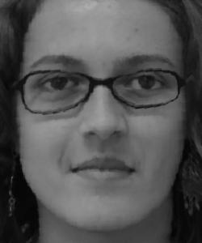
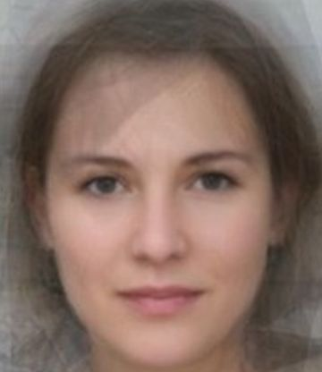

|
This project explores the application of affine transformations and interpolation techniques to modify facial structure and coloration. By first establishing correspondence points on source images, inverse warping can be used for the geometric transformation of facial features. In addition to distorting face shape, color morphing is achieved by interpolating and cross-dissolving RGB values. Together, these two main operations were used throughout the project to generate average faces, face morph sequences, and caricatures.
To start, my friend Rebecca and I took pictures of each other in front of a uniform white background. As a preprocessing measure, the software Krita was used to crop these pictures to the same dimensions with our features aligned to ensure a smoother morph later on. Next, pairs of correspondence points were selected on the images using this labeling tool; in total, 44 points were defined on each image. The triangulations were then computed on these points via Delaunay triangulation using scipy.spatial.Delaunay.
|
Figure X: elana.jpg |
Figure X: rebecca.jpg |
 Figure X: Correspondence points on elana.jpg with Delaunay triangulation. |
Figure X: Correspondence points on rebecca.jpg with Delaunay triangulation. |
At a high level, to merge im1 and im2 into a mid-way face involved the process defined below:
- Compute the average shape by averaging each keypoint location in the two faces weighted by $\text{warp_frac}$.
- Transform both faces to the average shape using inverse warping.
- Average the colors together weighted by $\text{dissolve_frac}$.
To produce the shape of the mid-way face, the average point set was computed through a weighted element-wise average between each pair of correspondence points $\vec{p}^{\text{im1}}_i$ and $\vec{p}^{\text{im2}}_i$ defined on im1 and im2. Each point $\vec{q}_i$ in the average point set was calculated using the formula $\vec{q}_i = \text{warp_frac} \cdot \vec{p}^{\text{im1}}_i + (1 - \text{warp_frac}) \cdot \vec{p}^{\text{im2}}_i$ with the weight $ \text{warp_frac} = 0.5$. Given these points, the average triangulation was then computed using scipy.spatial.Delaunay.
In order to map each face to the average shape, inverse warping was used. This involved calculating an affine transformation matrix $A$ such that given the vertices of two triangles tri1_pts $(\vec{p}_1, \vec{p}_2, \vec{p}_3)$ and tri2_pts $(\vec{q}_1, \vec{q}_2, \vec{q}_3)$, $A$ transforms tri1_pts to tri2_pts. Thus, its inverse $A^{-1}$ transforms tri2_pts to tri1_pts.
$$\vec{p}_i = \begin{bmatrix} p_{xi} \\ p_{yi} \end{bmatrix} \quad \vec{q}_i = \begin{bmatrix} q_{xi} \\ q_{yi} \end{bmatrix}$$ Because $\vec{p}_i$ and $\vec{q}_i$ are both $2 \times 1$, homogeneous coordinates are added to allow for the affine transformation. $$\vec{p'}_i = \begin{bmatrix} p_{xi} \\ p_{yi} \\ 1 \end{bmatrix} \quad \vec{q'}_i = \begin{bmatrix} q_{xi} \\ q_{yi} \\ 1 \end{bmatrix}$$ $$ A := \begin{bmatrix} a & b & c \\ d & e & f \\ 0 & 0 & 1 \end{bmatrix} \quad \text{st} \quad A\vec{p'}_i = \vec{q'}_i$$For each triangle in the average triangulation, all the coordinates in the triangle were generated using skimage.draw.polygon. Each of these points were multiplied by $A^{-1}$ to compute the affine projection to the corresponding triangles in im1 and im2.
$$A^{-1} \vec{q'}_i = \vec{p'}_i$$Finally, the points in the triangles from the resulting warp were then colored through nearest-neighbor interpolation of the values in the original images via scipy.ndimage.map_coordinate. These interpolated colors were then cross-dissolved with the weight $\text{dissolve_frac} = 0.5$.
$$\text{blended_colors} = \text{dissolve_frac} \cdot \text{new_colors1} + (1 - \text{dissolve_frac}) \cdot \text{new_colors2}$$- $\text{new_colors1} =$ interpolated colors from im1
- $\text{new_colors2} =$ interpolated colors from im2
|
Figure X: elana.jpg |
Figure X: rebecca.jpg |
Figure X: Average face of elana.jpg and rebecca.jpg |
The process to create the mid-way image was applied to create a morph sequence from im1 to im2. Instead of fixing $ \text{warp_frac} = 0.5$ and $\text{warp_frac} = 0.5$, the values of $ \text{warp_frac}$ and $\text{warp_frac}$ were varied across the range $[0, 1]$ for each step of the sequence. The result was a smooth transition consisting of 46 images with the first being im1 and the final image being im2.
|
Figure X: Morph sequence from elana.jpg to rebecca.jpg at $30$ frames per second (FPS). |
The average face of a population was computed using samples in the FEI Face Database, a Brazilian face database containing images of $N = 200$ individuals. Thus, while the original process to compute the mid-way face involved strictly two source images, this process was generalized to process $200$ images. Given the spatially normalized neutral-expression faces and keypoints from the database, the average point set and triangulation was computed over all the samples. Then, using the aforementioned warping function, each face was warped to the average geometry, and the colors were interpolated from the original images. These interpolated colors were multiplied by $1/N$ and added to the running average.
|
Figure X: Average neutral face of the FEI Face Database. |
|
Figure X: Elana's face |
Figure X: Elana's face warped to the average. |
To fit the average face, my eyes are widened, my eyebrows are straightened, and my nose is narrowed and more upturned. Because the original image of myself has a smiling expression, the warp is not as natural as it could have been if I had used a picture with a neutral expression. Consequently, my original smiling mouth is warped into a straight line with slightly downturned corners, as if suppressing a laugh. My facial structure is distorted as well, with my cheekbones and jaw lowered to fit the average geometry.
|
Figure X: Average face |
Figure X: The average warped to Elana's face. |
Conversely, the average face warped to mine has narrow, lengthened eyes; a widened and slightly downturned nose; arched eyebrows; and a sharper, more oval jawline. To fit my smiling expression, the cheeks are more prominent, and the mouth's corners are raised, stretching the lips.
As demonstrated by warping my face to the mean, similar distortions occur when aligning other individuals' faces to the average. Below, are examples of database samples adjusted to fit to the shape of the average face.
 Figure X: 1a.jpg |
Figure X: 1a.jpg warped to the average. |
|
Figure X: 19a.jpg |
Figure X: 19a.jpg warped to the average. |
 Figure X: 100a.jpg |
Figure X: 100a.jpg warped to the average. |
 Figure X: 108a.jpg |
Figure X: 108a.jpg warped to the average. |
|
Figure X: 195a.jpg |

Figure X: 195a.jpg warped to the average. |
In Figure X, the person's glasses interferes with the warp, causing noticeable artifacts. The glasses, being rigid in contrast to the soft features of the face, distorted unnaturally while the other features were transformed to fit the average face shape. This resulted in the frames being skewed and disproportionate.
Given the average face of a population, caricatures can be created by extrapolating from the mean. Caricatures involve exaggerating the unusual features on a face. Therefore, these features can be identified and enhanced using the following formula when $\text{warp_frac} > 1$:
$$\begin{aligned} \text{caricature} &= \text{warp_frac} \cdot (\text{face} - \text{avg}) + \text{avg} \\ &= \text{warp_frac} \cdot \text{face} - \text{warp_frac} \cdot \text{avg} + \text{avg} \\ \text{caricature} &= \text{warp_frac} \cdot \text{face} + (1 - \text{warp_frac} \cdot \text{avg}) \end{aligned}$$Thus, this formula is equivalent to the one used previously to warp one image to another. To create caricatures of myself, $\text{warp_frac} > 1$, and as $\text{warp_frac}$ increases, the differences between my features and the average become more exaggerated.
|
Elana's face (Figure X) |
Figure X: Caricature of Elana with $\text{warp_frac} = 1.2$. |
Figure X: Caricature of Elana with $\text{warp_frac} = 1.5$. |
Figure X: Caricature of Elana with $\text{warp_frac} = 1.75$. |
Compared to the mean face, my eyes are narrower, eyebrows more arched, nose wider, and chin is more pointed. As a result, these features are amplified in the caricature. Furthermore, my smiling expression is emphasized, with the corners of my mouth pulled higher as $\text{warp_frac}$ increases.
Ethnicity Change
To change the ethnicity of my face, I averaged my face with that of the average French woman produced from a study by the University of Glasgow. To change only the shape of my face, the parameters $\text{warp_frac}$ and $\text{dissolve_frac}$ were set as $\text{warp_frac} = 0.5$ and $\text{dissolve_frac} = 1$. This warps my face geometry to that of an average French woman, though interpolating the colors from only my face. To change only the color, $\text{warp_frac} = 1$ and $\text{dissolve_frac} = 0.5$ were used, maintaining the geometry of my face, though with the coloration of the average French woman. Thus, for the full morph, the parameters were set to combine both geometry and coloration from both images equally ($\text{warp_frac} = 0.5$ and $\text{dissolve_frac} = 0.5$).
|

Figure X: Face of the average French woman. |
Figure X: Elana's face. |
|
|
Figure X: French-shaped Elana. |
Figure X: French-colored Elana. |
Figure X: Full French Elana. |